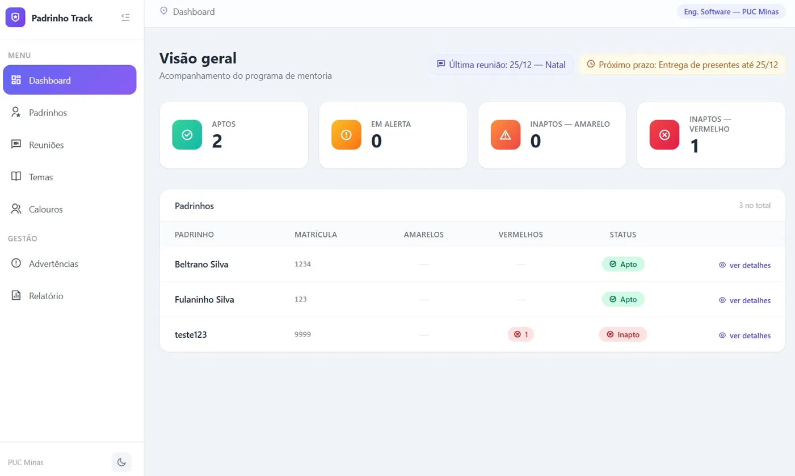

Portfólio · Engenharia de Software
Olá, sou o
Christiano.
Estudo Engenharia de Software na PUC Minas. Faço aplicações em Python e Java. Gosto de transformar tarefa repetitiva em sistema que funciona.
- ~50padrinhos voluntários coordenados
- 127calouros acompanhados na PUC Minas
Entre o código e as pessoas, eu transformo tarefa repetitiva em sistema útil.
01 / Sobre mim
Tecnologia, com gente por perto.
- Aprendo na sala de aula e nos projetos.
- Coordeno voluntários no Programa de Apadrinhamento da PUC Minas.
- Criei o Padrinho Track para acompanhar os calouros.
- Estudo APIs, bancos de dados e IA aplicada.
Linguagens mais usadas
Minha stack
Minha formação
Engenharia de Software
PUC Minas · Belo Horizonte
2025 a 2028 · previsão de conclusão
Do problema ao projeto.
O Padrinho Track nasceu da rotina do programa de mentoria. Reúne presenças, reuniões, relatórios e certificados em um lugar só.
Ver projetos